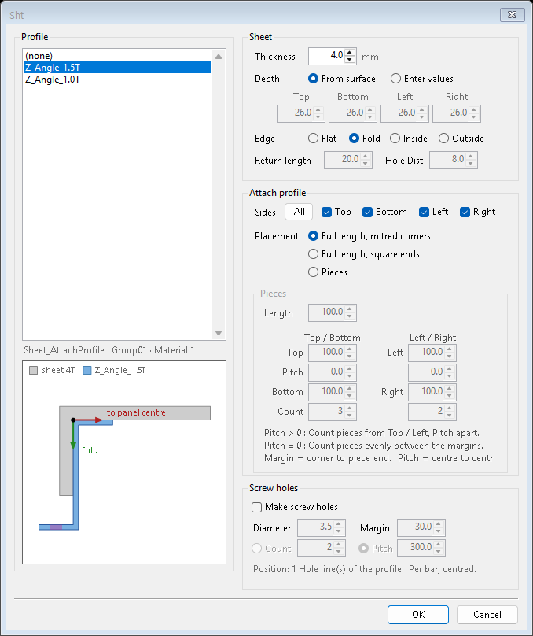
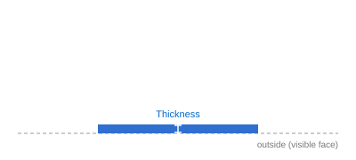
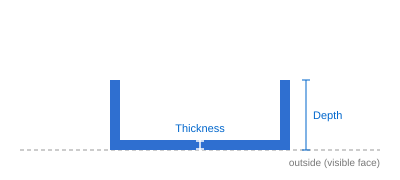
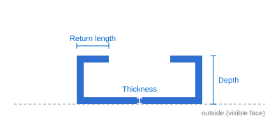
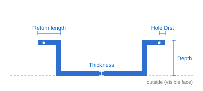
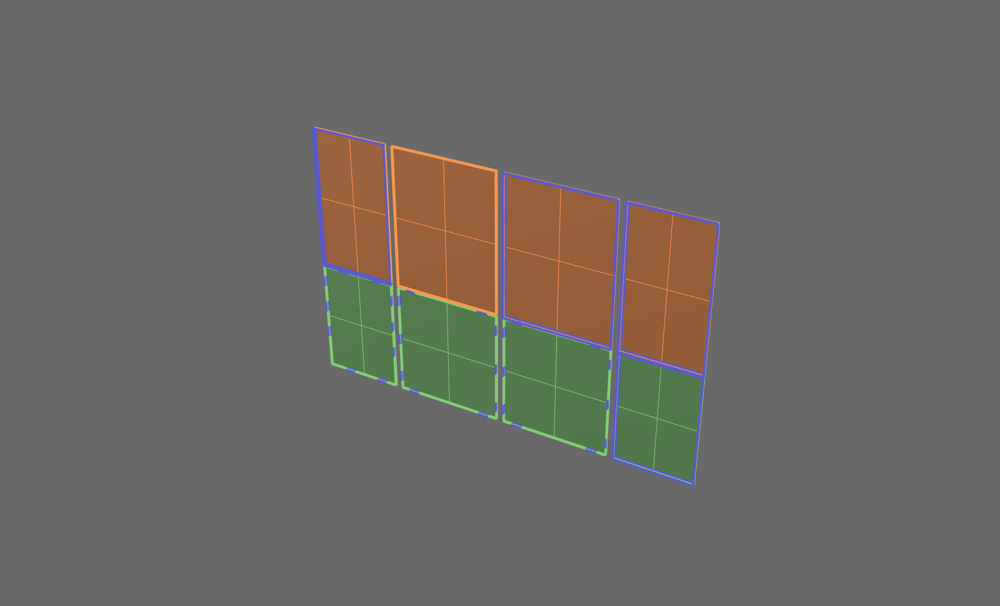
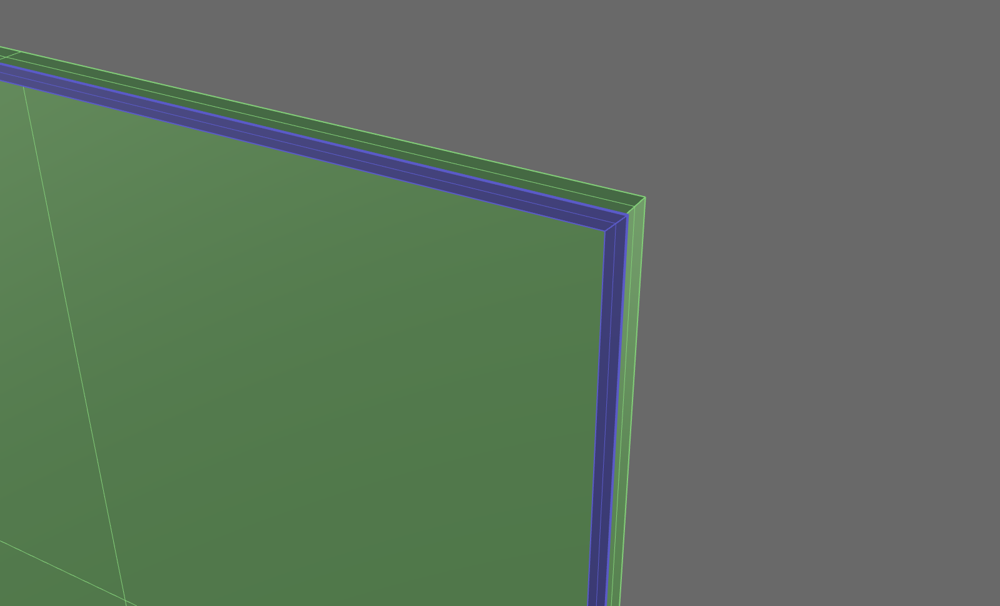
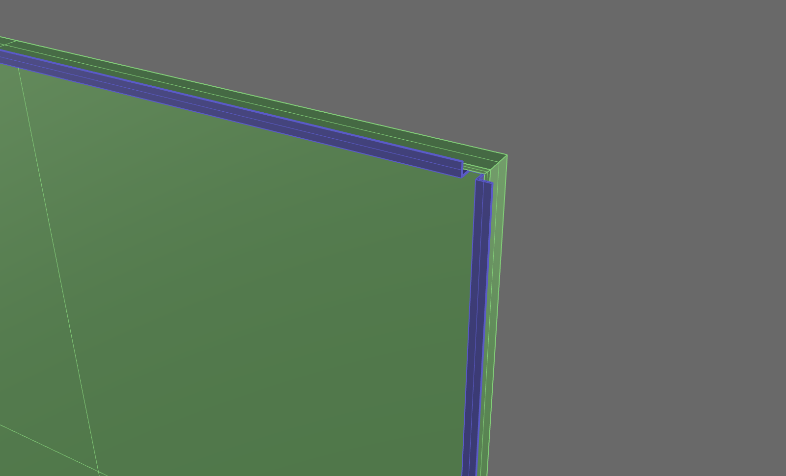

Sht
판 면(Sheet_XX 또는 Glass_XX)을 골라 접힌 판재를 만듭니다. 두께, 접는 깊이, 끝 모양(평판 · 접기 · 안쪽 되접기 · 바깥쪽 되접기)을 정하고, 판 뒷면에 profile 을 붙이거나 스크류 구멍을 낼 수 있습니다.
유리 자리에 들어가는 금속 판재(백판 · 스팬드럴 판 등)를 모델링할 때 사용합니다. 만든 판재에는 크기와 가공 정보가 기록되어 번호(ShNo) · 수량표(ShList) · 가공도(ShFd)가 그 기록으로 만들어집니다.
S_Center1 선과 등록된 단면(SSP), 방향이 기록된 와이어프레임(WVector)을 바탕으로 동작합니다.Sheet_XX · Glass_XX)을 하나 이상 선택하고 Enter 를 누릅니다.
| 구역 | 항목 | 설명 |
|---|---|---|
| Profile | 목록 · 미리보기 | 붙일 profile 을 고릅니다. (none) 을 고르면 붙이지 않습니다. 아래 그림은 판과 profile 의 단면 모양입니다. |
| Sheet | Thickness | 판 두께(mm). 1.2 · 2 · 3 · 4 등 필요한 값을 넣습니다. |
| Sheet | Depth | 접는 깊이(바깥 치수). From surface = 단면의 S_Center1 선 길이를 변마다 그대로 씁니다. Enter values = Top · Bottom · Left · Right 를 직접 넣습니다. |
| Sheet | Edge | 끝 모양. Flat = 접지 않는 평판, Fold = 한 번 접기, Inside = 접은 뒤 안쪽으로 되접기, Outside = 접은 뒤 바깥쪽으로 되접기. |
| Sheet | Return length | 되접는 길이(바깥 치수, 두께 포함). Inside · Outside 일 때 씁니다. |
| Sheet | Hole Dist | 바깥쪽 되접기의 스크류 구멍이 되접힌 끝에서 떨어진 거리. Outside 일 때만 씁니다. |
| Attach profile | Sides | profile 을 붙일 변(Top · Bottom · Left · Right). All 은 네 변 모두. |
| Attach profile | Placement | Full length, mitred corners = 변 전체 길이로 붙이고 코너에서 45°로 맞댑니다. Full length, square ends = 변 전체 길이로 붙이고 양 끝을 직각으로 자릅니다. 세로 막대(왼쪽 · 오른쪽)가 통으로 가고 가로 막대(위 · 아래)가 그 사이에 들어갑니다. Pieces = 짧은 조각을 여러 개 붙입니다. |
| Pieces | Length · Top · Pitch · Bottom · Count | 조각 길이와 배치. 여유(Top · Bottom · Left · Right)는 꼭짓점에서 조각 끝까지, Pitch 는 조각 중심에서 중심까지입니다. Pitch 가 0 보다 크면 Top(또는 Left)에서부터 Pitch 간격으로 Count 개, Pitch 가 0 이면 두 여유 사이에 Count 개를 고르게 놓습니다. |
| Screw holes | Make screw holes | profile 에 스크류 구멍을 냅니다. 바깥쪽 되접기(Outside)에서는 되접힌 부분에 냅니다. |
| Screw holes | Diameter · Margin · Count / Pitch | 구멍 지름, 끝에서의 여유, 그리고 개수(Count) 또는 간격(Pitch) 중 하나. |
아래 그림은 끝 모양마다의 단면 약도입니다. 모양이 잘 보이도록 두께를 크게, 폭을 짧게 그렸습니다(실제 비율이 아닙니다). 아래쪽이 판재의 보이는 면입니다.







| 항목 | 설명 |
|---|---|
| profile 라이브러리 | %LOCALAPPDATA%\RCW_V5\5.0\Templates\SheetProfiles 폴더의 3dm 파일에서 읽습니다. 파일 안의 group 하나가 profile 하나입니다. 파일을 고쳐 저장하면 다음 실행부터 목록에 반영됩니다. |
| 스크류 구멍 자리 | 라이브러리 group 안에 Hole(또는 Hole_Center) 레이어로 그은 선이 구멍의 축입니다. |
| 평판에 붙이기 | Flat 에도 profile 을 붙일 수 있습니다. 자리는 접힌 판재와 같습니다(판 가장자리에서 두께만큼 안쪽). |
| 길이 | 막대의 길이는 가장 긴 쪽으로 기록됩니다(45°로 자른 막대는 바깥쪽이 더 깁니다). |
| 항목 | 설명 |
|---|---|
| 판재 | 닫힌 solid. Sheet_<두께>T 레이어(예: Sheet_3T). |
| profile 막대 | Sheet_<두께>T_Profile 레이어. 판재와 같은 group 입니다. |
| 판 면 | 고른 Sheet_XX 면은 판재로 바뀌어 남지 않습니다. |
| 되돌리기 | Undo 한 번으로 만들기 전 상태로 돌아갑니다. |
-Sht 를 사용합니다(예: Thickness · Depth · Edge · ProfileNo · Ends · Pieces · Holes).| 명령어 | 설명 |
|---|---|
| ShMD | 판재 칸 면 만들기 — Sht 에서 고를 면을 만듭니다. |
| ShNo | 판재 번호 — 같은 판재에 같은 번호를 붙입니다. |
| ShList | 판재 수량표. |
| ShTable · ShFd | 판재 가공도 표와 가공도. |